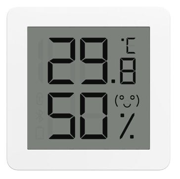
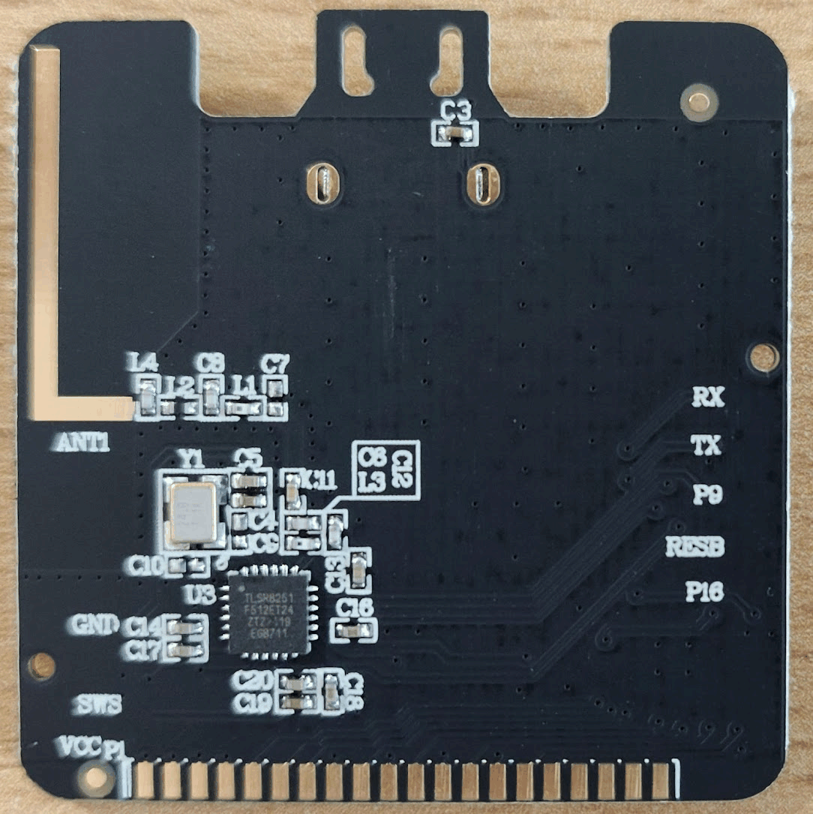
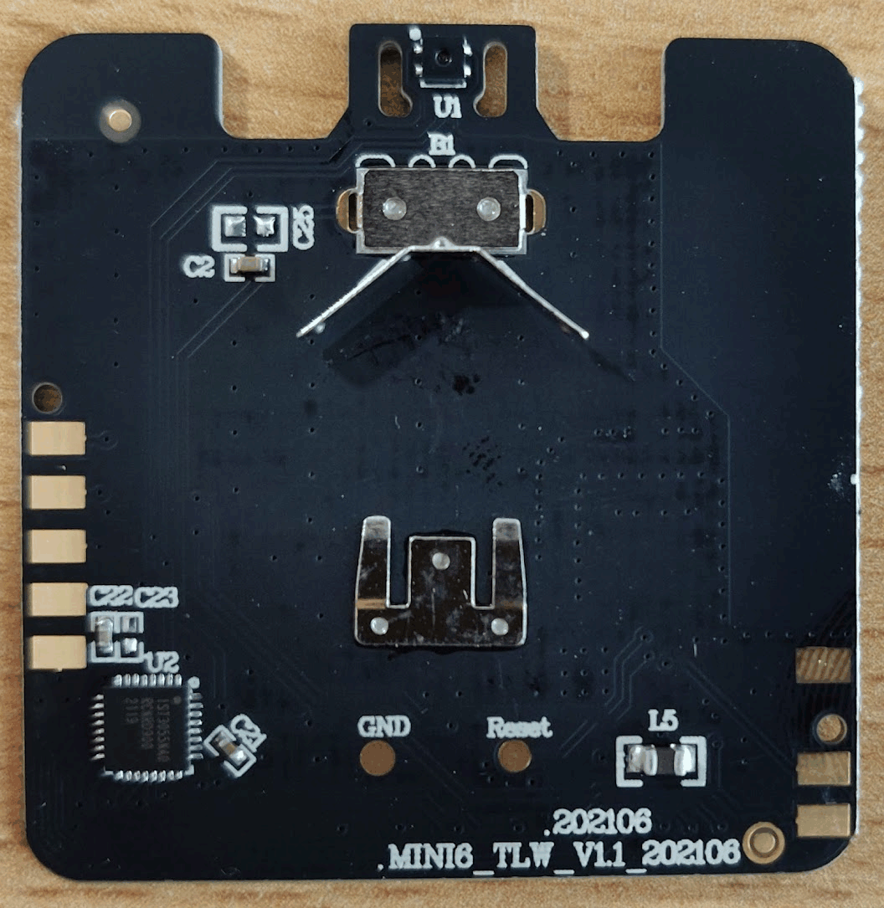
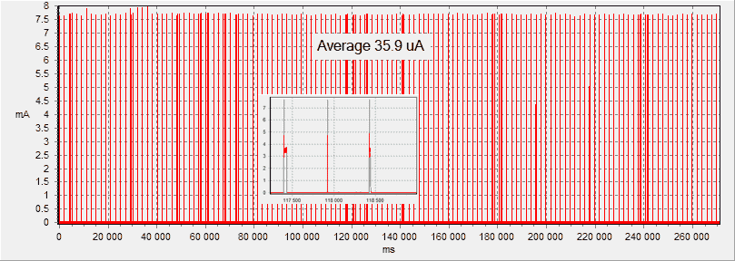

Meawow MHO-C122 (2AWMOMHOC122) Bluetooth Mini Thermo-Hygrometer
SoC: TLSR8251F512ET24, LCD: IST3055NA0, Sensor: SHTV3

PCB:


Data provided by
FaBjE
Power Consumption: Original Firmware MHO-C122

Alternate firmware
Full Flash Original Firmware MHO-C122
Discussion
FCC Report